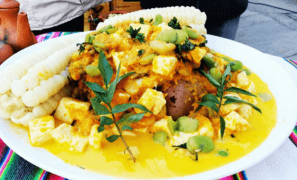
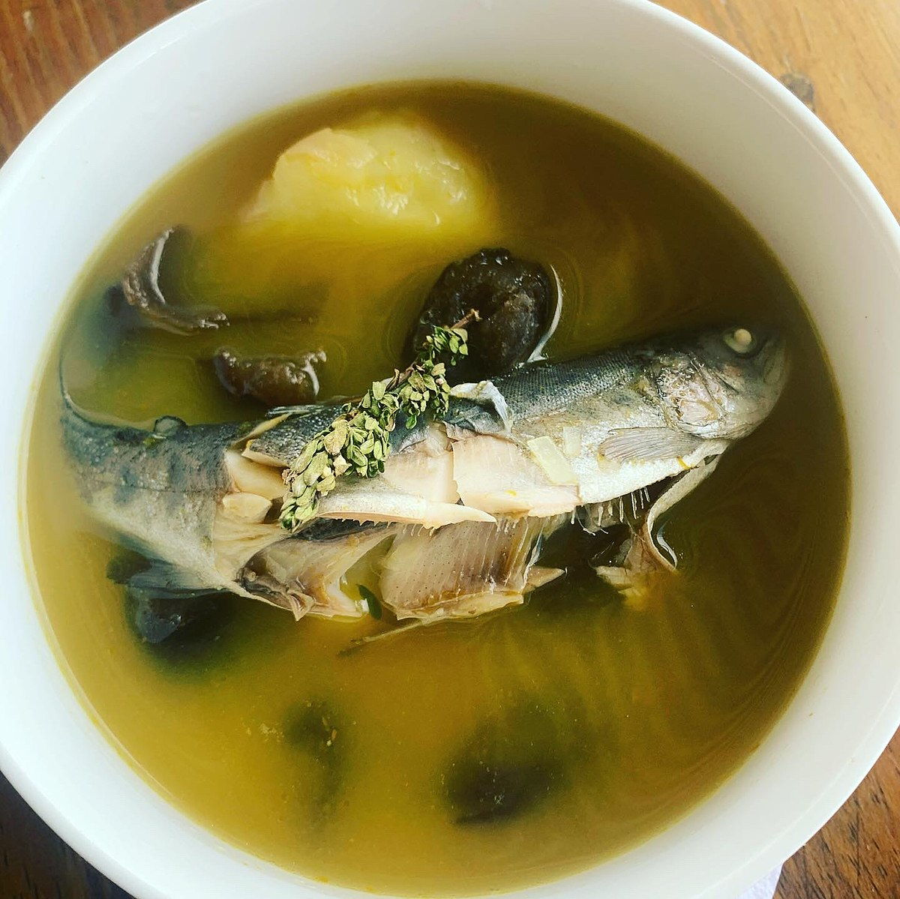
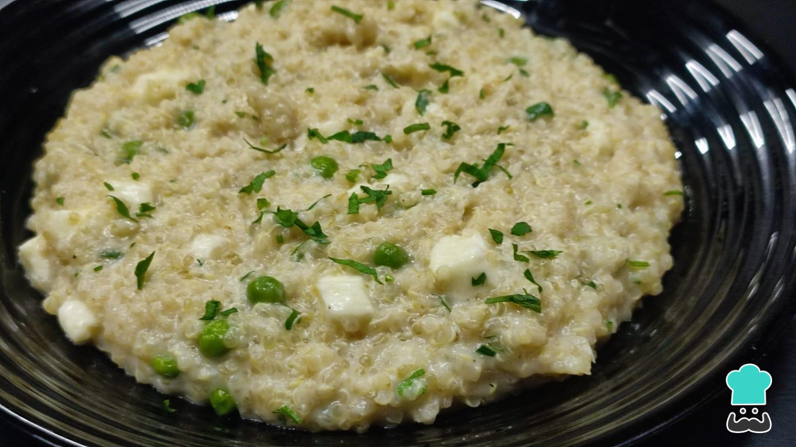
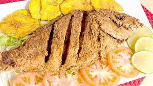
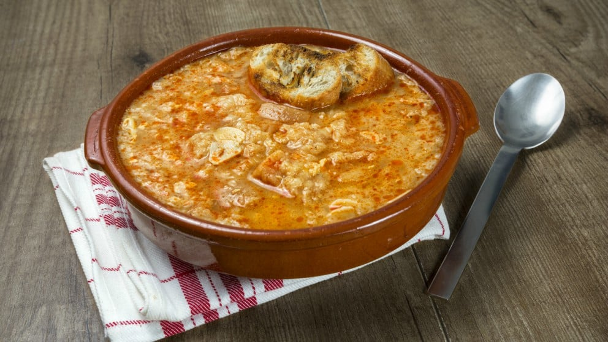
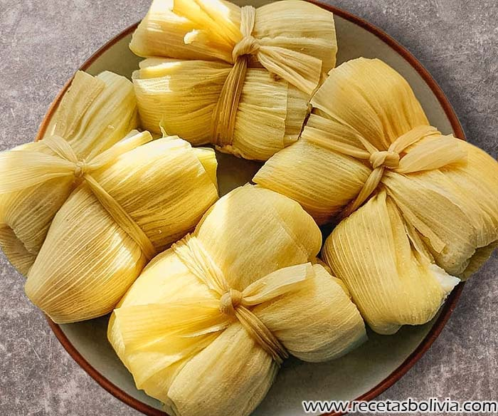
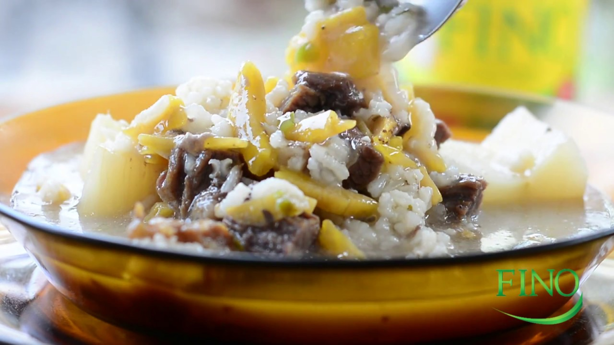
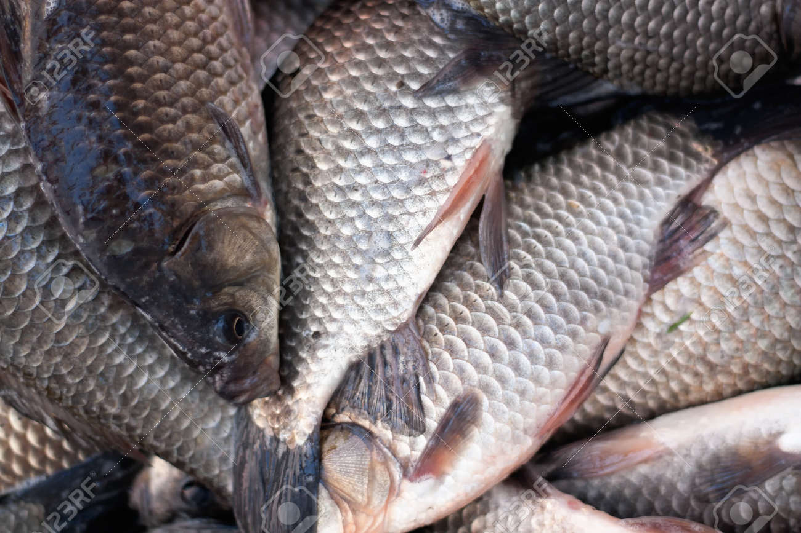
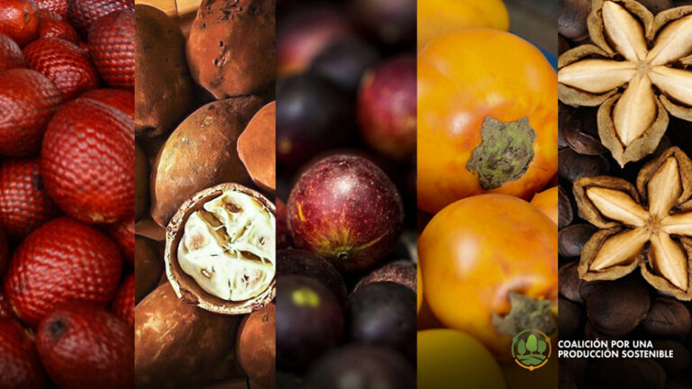

Resetas en la festividad

La Paz - Quesumacha
Sopa espesa de papa, queso, ají amarillo y hierbas aromáticas (huacataya). Muy típica de La Paz.

La Paz - Wallake
Caldo de pescado (karachi o pejerrey del Lago Titicaca), con ají, papa y hierbas.

La Paz - Pesque de Quinua
Quinua cocida y espesada, a menudo servida con leche y queso.

Oruro - Pescado frito
Pejerrey o trucha si hay disponibilidad.

Cochabamba - Locro de Zapallo
Muy popular en los valles cochabambinos, se prepara todo a base de zapallo.

Cochabamba - Sopa de Pan o Lacias
La sopa suele proceder de la preparación culinaria con evaporación, como es el cocido, o mediante retención de vapores

Chuquisaca - Aji de alberja
Las arvejas secas se pueden utilizar de diferentes formas en la cocina moderna. Ya sea en sopas, platos salteados, ensaladas, guisos o pasteles.

Tarija - Humintas
Este cereal que se consumía en América desde la época precolombina, contiene (entre otros nutrientes) vitamina B1, B3 y ácido fólico.

Santa Cruz - Locro Carretero
sopa espesa de arroz, charque - versión sin carne roja usa pescado seco o queso

Beni - Pescado de Río
Pacú, surubí, palometa, etc. (en caldo, frito, asado). Uso de Yuca y Plátano: Masacos, sonsos, yuca hervida o frita.

Pando - Frutos amazónicos
(como el asaí, copoazú) pueden incorporarse en postres o refrescos.